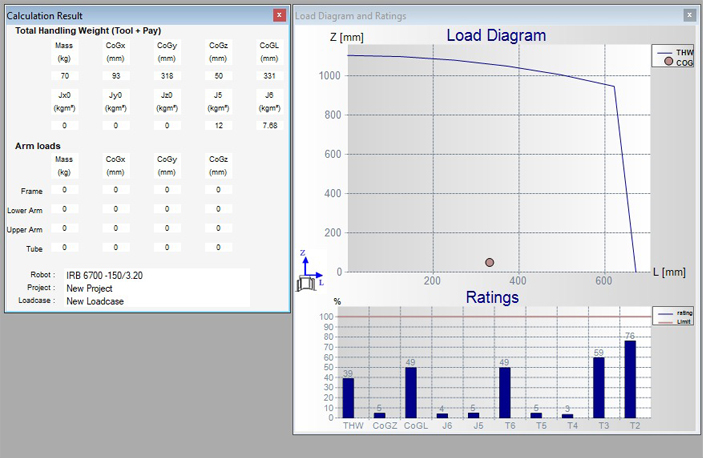
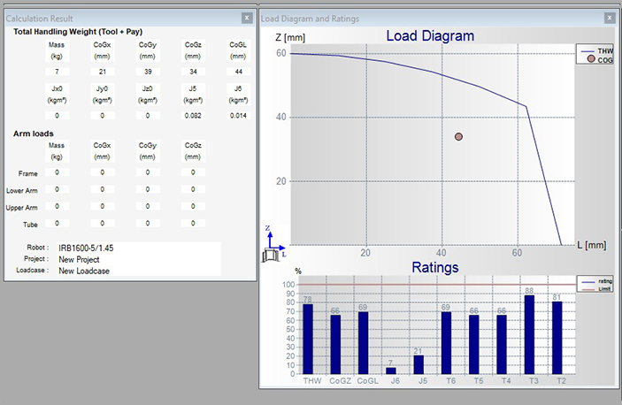

PROYECTO C3 - PLÁSTICO
PROYECTO C3 - PLÁSTICOSelección de robots
Para esta aplicación se requieren dos robots industriales ABB, el primero para mover la pieza por las diferentes estaciones de operación y un segundo robot para la manipulación e incrustación de los casquillos.
Manipulación de la pieza fabricada
La selección del robot se dio a través de dos criterios, alcance horizontal y capacidad de carga. Como primera medida se halla la carga a que debe manipular el robot.
- Peso gripper = 60 kg
- Peso pieza plástica = 10 kg
Con los parámetros obtenidos se procede a realizar la selección a travél software ABB RobotLoad, el cual hace parte de la suite de software proevida directamente por ABB para la selección de robots. Los parámetros de selección a través del software obtenido fueron: 
Como resultado se necesita un robot con una capacidad de carga mayor a 70 kg. Por lo tanto, el IRB 6700, en su versión 6700-150/3.20 cumple con los requisitos de la celda, el cual tiene las siguientes características principales:
- Capacidad de carga = 150 kg
- Alcance horizontal = 3.20 m
- Controlador = IRC5
Manipulación de casquillos
Para este robot se tienen los siguientes requerimientos.
- Peso gripper = 6 kg
- Peso casquillos = 300 g
Con los parámetros obtenidos se procede a realizar la selección a travél software ABB RobotLoad, el cual hace parte de la suite de software proevida directamente por ABB para la selección de robots. Los parámetros de selección a través del software obtenido fueron:  Como resultado se necesita un robot con una capacidad de carga mayor a 7 kg. Por lo tanto, el IRB 1300 , en su versión IRB 1300-7/1.4 cumple con los requisitos de la celda, el cual tiene las siguientes características principales:
- Capacidad de carga = 7 kg
- Alcance horizontal = 1.4 m
- Controlador = OmniCore